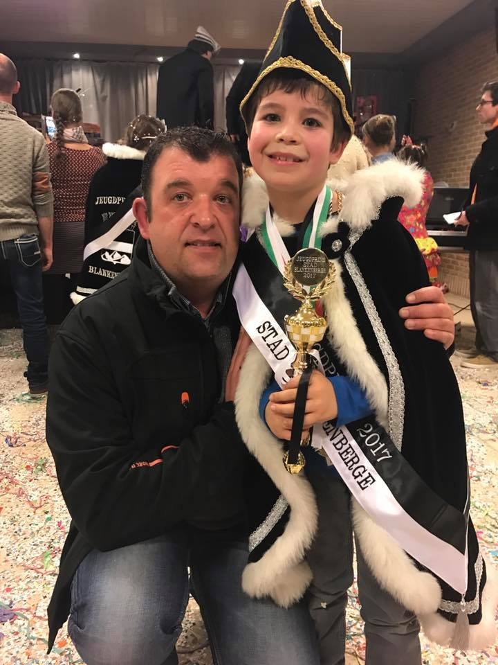

Toen dat ik 7 jaar was, was er een voetbal match te bekijken in een café en mijn papa ging daar naar toe kijken. Hij had gehoord dat er daar kinderanimatie was dus hij nam mij mee.
Wij kwamen daar toe en er lag overal speelgoed confetti er was muziek en er waren andere kinderen dus een top sfeer. Later op de middag was er een wedstrijd maar ik wist niet wat er te winnen was maar ik deed gewoon mee.
we zijn wat verder in het spel en ik was best goed bezig ik zat bij de laatste 5 kinderen. Een vriend van mijn papa ging dat gaan zeggen dat ik goed bezig was maar mijn papa wist helemaal van niets.
later zat ik bij de laatste 2 en we deden verder en ik had gewonnen. Die zelfde vriend van mijn papa ging hem gaan feliciteren maar mijn papa wist niet wat hij bedoelde, dus hij zegt ja Danny je zoon is jeugdprins carnaval geworden.
Mijn papa snapte er niets van en hij rend direct naar de zaal waar wij toen zaten. Hij komt daar toe en hij ziet dat ik op het podium gekroond werd tot Jeugdprins Carnaval van Blankenberge. Hij kon het niet geloven als grote carnavalist en hij is direct met tranen in zijn ogen naar mij gerend.
Als je wint krijg je ook heel veel speelgoed en alle 2 mijn ouders zijn dan moeten komen om dat speelgoed mee te nemen. Mijn ouders hebben toen een stuk of 3 keer moeten rijden met 2 auto's om alles mee te krijgen. Dat speelgoed heeft 3 jaar in mijn garage gestaan.
Later hebben we dat dan gedonneerd

Noah Decoster
Jeugdprins Carnaval Blankenberge.
